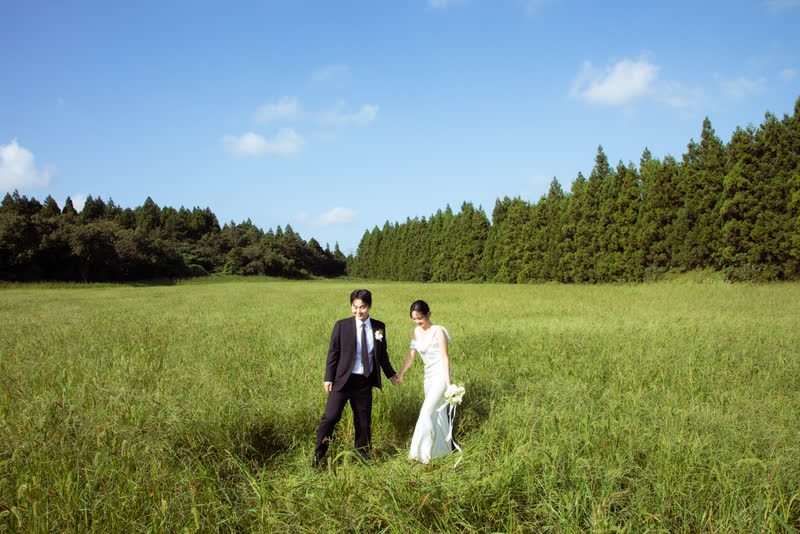
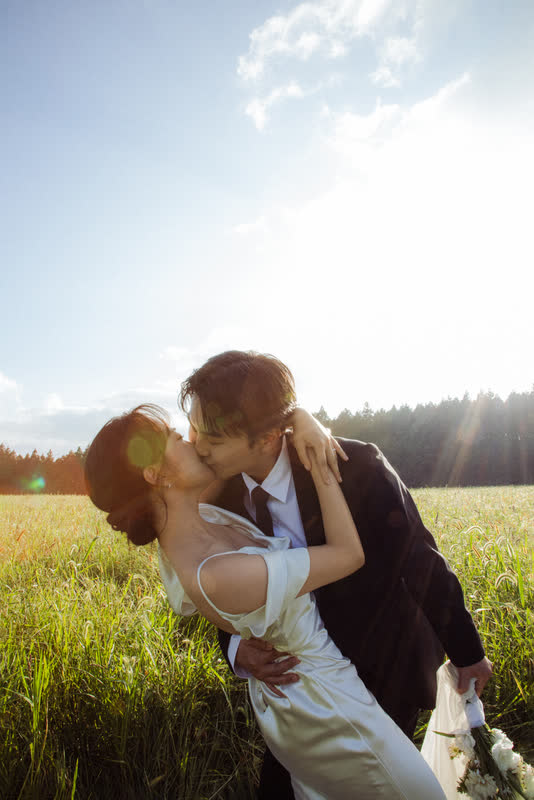

<meta charset="utf-8">
<meta name="viewport" content="width=device-width, initial-scale=1, viewport-fit=cover">
<title>진용·하림 사진</title>
<meta name="claude:viewport-fit-sides" content="cover">
<link rel="preconnect" href="https://fonts.googleapis.com">
<link rel="preconnect" href="https://fonts.gstatic.com" crossorigin>
<link href="https://fonts.googleapis.com/css2?family=Archivo:wght@500&family=Noto+Sans+KR:wght@400;500&display=swap" rel="stylesheet">
<link rel="stylesheet" href="SectionKit.css">
<style>
  /* Photos: in the cover's tone (tokens come from SectionKit.css). Fourteen flat photos scattered over the paper
     like a magazine spread (the user's reference image): very different sizes, no shared edges, wide empty paper,
     a few running off the left or right edge of the screen. Photos only: no words at all (the user's request), no
     border, no shadow, no tilt, no overlap. Tap a photo to see it whole on the paper.

     Every place is in --photos-unit: 1% of the stage width (the screen, at most 440px), so the same arrangement
     holds from 320px to 440px. Each photo keeps its box through aspect-ratio before its image arrives.
     The positions live in the markup (--x, --y, --w, --r), so the layout needs no script. The top photo sits at
     --y: 0 and the stage ends at the bottom photo, so the padding alone sets the space to the greeting above and
     the ceremony below, in px like the other sections. */
  .photos {
    --photos-unit: min(1vw, 4.4px);
    position: relative;
    overflow: hidden;
    padding-block: 48px 56px;
    background: var(--paper);
  }

  /* The 440px column. The section itself spans the screen and clips, so a photo that runs past the column is cut by
     the screen edge on a phone and shown whole on a wide screen. */
  .photos__stage {
    position: relative;
    max-width: 440px;
    height: calc(var(--photos-unit) * 527.4);
    margin: 0 auto;
  }

  .photos__item {
    appearance: none;
    -webkit-appearance: none;
    position: absolute;
    left: calc(var(--photos-unit) * var(--x));
    top: calc(var(--photos-unit) * var(--y));
    width: calc(var(--photos-unit) * var(--w));
    aspect-ratio: var(--r);
    margin: 0;
    padding: 0;
    border: 0;
    border-radius: 0;
    /* A shade of the paper holds the place until the photo arrives. */
    background: #efeee9;
    cursor: zoom-in;
    -webkit-tap-highlight-color: transparent;
  }

  .photos__item img {
    display: block;
    width: 100%;
    height: 100%;
    object-fit: cover;
    object-position: var(--pos, 50% 50%);
  }

  /* Keyboard focus: a plain pencil line around the photo (no shadow). */
  .photos__item:focus {
    outline: none;
  }

  .photos__item:focus-visible {
    outline: 2px solid var(--pencil);
    outline-offset: 3px;
  }

  /* Full view: the same paper covers the screen and the one photo sits on it whole. No dark backdrop.
     Tap anywhere, press Esc or go back to put it away. */
  /* --viewer-h is the screen height: 100vh where svh is unknown, the small viewport height where it is
     (a custom property holding 100svh is never invalid at parse time, so it needs @supports, not a fallback line). */
  .photos__viewer {
    --viewer-h: 100vh;
    position: fixed;
    inset: 0;
    z-index: 100;
    display: grid;
    place-items: center;
    overscroll-behavior: contain;
    background: var(--paper);
  }

  @supports (height: 100svh) {
    .photos__viewer {
      --viewer-h: 100svh;
    }
  }

  /* The small copy shows through as the background until the original has loaded over it. */
  .photos__viewer-image {
    display: block;
    width: min(
      calc(100vw - 2 * max(24px, env(safe-area-inset-left, 0px))),
      calc((var(--viewer-h) - 2 * max(40px, env(safe-area-inset-top, 0px))) * var(--viewer-ratio, 1)),
      760px
    );
    height: auto;
    aspect-ratio: var(--viewer-ratio, 1);
    background-size: 100% 100%;
    pointer-events: none;
  }

  .photos__viewer-close {
    appearance: none;
    position: absolute;
    inset: 0;
    z-index: 1;
    width: 100%;
    height: 100%;
    margin: 0;
    padding: 0;
    border: 0;
    background: transparent;
    cursor: zoom-out;
    -webkit-tap-highlight-color: transparent;
    outline: none;
  }

  @media (prefers-reduced-motion: no-preference) {
    .photos__viewer:not([hidden]) {
      animation: photos-viewer-in 180ms ease-out;
    }

    @keyframes photos-viewer-in {
      from {
        opacity: 0;
      }
    }
  }
</style>

<section class="photos" aria-label="사진">
  <div class="photos__stage">
    <button type="button" data-photo class="photos__item" style="--x: 30; --y: 0; --w: 62; --r: 800 / 534"></button>
    <button type="button" data-photo class="photos__item" style="--x: 14; --y: 56; --w: 22; --r: 534 / 800"></button>
    <button type="button" data-photo class="photos__item" style="--x: 44; --y: 72; --w: 32; --r: 800 / 534"></button>
    <button type="button" data-photo class="photos__item" style="--x: 72; --y: 104; --w: 36; --r: 534 / 800"></button>
    <button type="button" data-photo class="photos__item" style="--x: 10; --y: 162; --w: 22; --r: 534 / 800"></button>
    <button type="button" data-photo class="photos__item" style="--x: 42; --y: 172; --w: 54; --r: 534 / 800"></button>
    <button type="button" data-photo class="photos__item" style="--x: -8; --y: 238; --w: 44; --r: 800 / 534"></button>
    <button type="button" data-photo class="photos__item" style="--x: 78; --y: 262; --w: 26; --r: 534 / 800"></button>
    <button type="button" data-photo class="photos__item" style="--x: 44; --y: 306; --w: 30; --r: 1; --pos: 52% 50%"></button>
    <button type="button" data-photo class="photos__item" style="--x: 14; --y: 350; --w: 46; --r: 534 / 800"></button>
    <button type="button" data-photo class="photos__item" style="--x: 68; --y: 362; --w: 22; --r: 534 / 800"></button>
    <button type="button" data-photo class="photos__item" style="--x: 30; --y: 428; --w: 28; --r: 800 / 534"></button>
    <button type="button" data-photo class="photos__item" style="--x: 72; --y: 436; --w: 26; --r: 534 / 800"></button>
    <button type="button" data-photo class="photos__item" style="--x: -14; --y: 486; --w: 62; --r: 800 / 534"></button>
  </div>
  <div class="photos__viewer" id="photos-viewer" role="dialog" aria-modal="true" aria-label="사진 크게 보기" aria-describedby="photos-viewer-image" hidden>
    
    <button class="photos__viewer-close" id="photos-viewer-close" type="button" aria-label="닫기"></button>
  </div>
</section>

<script src="SectionKit.js"></script>
<script>
  (() => {
    // Full view of one photo on the paper. The photos and their places are all in the markup; this only opens
    // and closes the view. Wrapped in its own scope so nothing leaks into the page's globals.
    const VIEWER_TAP_GUARD_MS = 350;
    const viewer = document.getElementById('photos-viewer');
    const viewerImage = document.getElementById('photos-viewer-image');
    const viewerClose = document.getElementById('photos-viewer-close');
    const photoButtons = [...document.querySelectorAll('.photos [data-photo]')];
    let viewerOpenedAt = 0;
    let viewerReturnFocus = null;
    // True while the open view has its own history entry, so Android's back button closes it.
    let viewerInHistory = false;

    // photos/photo-07-sm.jpg -> photos/photo-07.jpg (the 1600px original).
    const getOriginalSource = (smallSource) => {
      return smallSource.replace(/-sm\.jpg$/, '.jpg');
    };

    const handleViewerImageLoad = () => {
      viewerImage.style.backgroundImage = '';
    };

    const openViewer = (button) => {
      const thumb = button.querySelector('img');
      const width = Number(thumb.getAttribute('width'));
      const height = Number(thumb.getAttribute('height'));

      viewerOpenedAt = performance.now();
      viewerReturnFocus = button;
      viewerImage.style.setProperty('--viewer-ratio', (width / height).toFixed(4));
      viewerImage.style.backgroundImage = `url("${thumb.currentSrc || thumb.src}")`;
      viewerImage.alt = thumb.alt;
      viewerImage.setAttribute('src', getOriginalSource(thumb.getAttribute('src')));
      viewer.hidden = false;
      document.documentElement.style.overflow = 'hidden';
      viewerClose.focus({ preventScroll: true });

      try {
        window.history.pushState({ photosViewer: true }, '');
        viewerInHistory = true;
      } catch {
        viewerInHistory = false;
      }
    };

    const closeViewer = () => {
      if (viewer.hidden) {
        return;
      }

      viewer.hidden = true;
      document.documentElement.style.overflow = '';

      if (viewerReturnFocus) {
        viewerReturnFocus.focus({ preventScroll: true });
      }

      viewerReturnFocus = null;

      // Closed by tap or Esc: step back over the entry the view pushed. The popstate that follows is ignored.
      if (viewerInHistory) {
        viewerInHistory = false;
        window.history.back();
      }
    };

    const handlePhotoClick = (event) => {
      openViewer(event.currentTarget);
    };

    // The back button (or gesture) while the view is open closes the view instead of leaving the page.
    const handleViewerPopState = () => {
      if (!viewerInHistory) {
        return;
      }

      viewerInHistory = false;
      closeViewer();
    };

    const handleViewerClick = () => {
      // A held Enter repeats on the close button straight after opening; that must not close the view.
      if (performance.now() - viewerOpenedAt < VIEWER_TAP_GUARD_MS) {
        return;
      }

      closeViewer();
    };

    const handleDocumentKeyDown = (event) => {
      if (viewer.hidden) {
        return;
      }

      if (event.key === 'Escape') {
        event.preventDefault();
        closeViewer();
      }

      // The close button is the only stop inside the dialog, so Tab stays on it.
      if (event.key === 'Tab') {
        event.preventDefault();
        viewerClose.focus({ preventScroll: true });
      }
    };

    photoButtons.forEach((button) => {
      button.addEventListener('click', handlePhotoClick);
    });
    viewer.addEventListener('click', handleViewerClick);
    viewerImage.addEventListener('load', handleViewerImageLoad);
    document.addEventListener('keydown', handleDocumentKeyDown);
    window.addEventListener('popstate', handleViewerPopState);
  })();
</script>
